Changing ks, it changes the way the cloth drops and bounces based on the pin. With a lower ks, we have more wrinkles and bounce when the cloth is dropped.
While higher ks, we have less bounce, and it seems like the cloth is alot stiffer.
Changing the density affects the way the cloth is released since if we have a lower density, then it is less likely to have the wrinkles and less affected by the air.
Higher density, we see that when the cloth is released theres more wrinkle and more bounce since its heavier.
The damping affects the stiffness and heaviness of the cloth. Lower damp makes the cloth drops faster and more loose. While higher damping levels, makes it drop slower and moves less at the resting position.
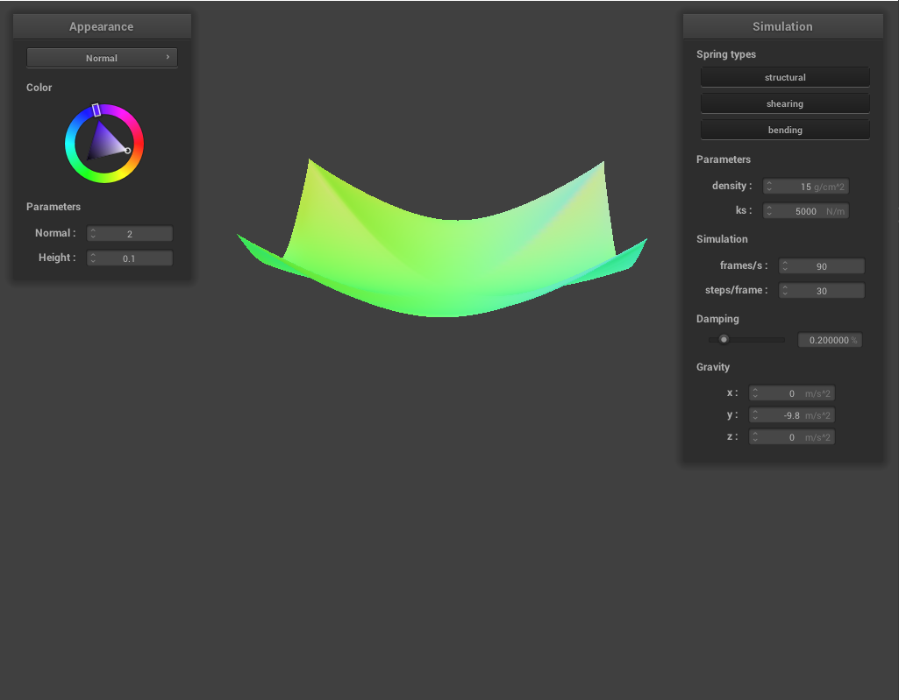
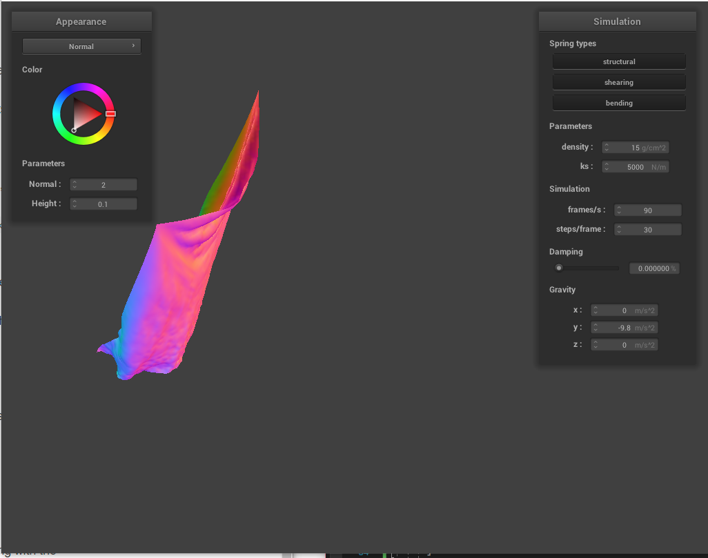
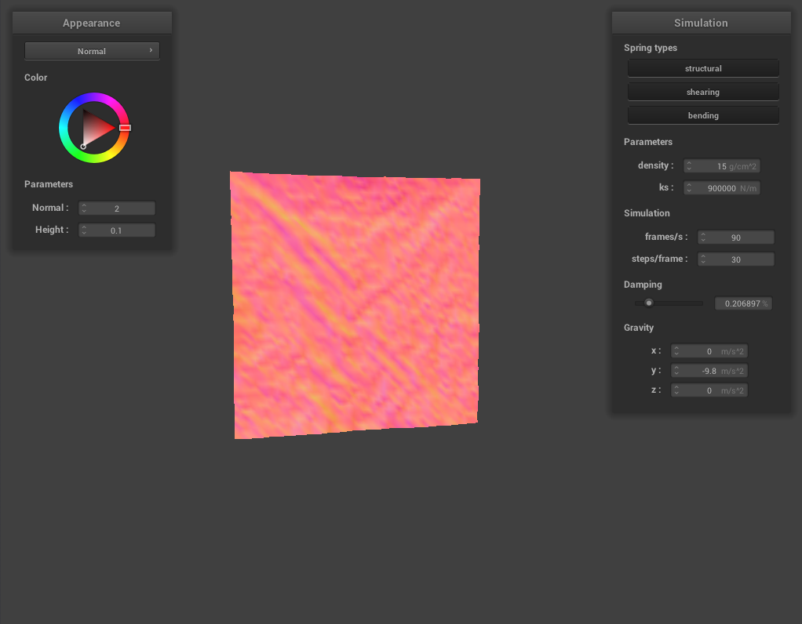
Part 3: Handling collisions with other objects
For the ks = 500, we see that the cloth doesn't fluffy out as much as when ks is bigger. We also see that higher value for ks means that we have
less folds when resting on the ball.
With varying the ks, it changes how the cloth falls down and interact with collision, when we have a high ks and low density, the cloth floats and constantly swirl and folds.
With varying the density, it changes how the cloth folds on itself when the cloth falls down, we see that higher density leads to more folds.
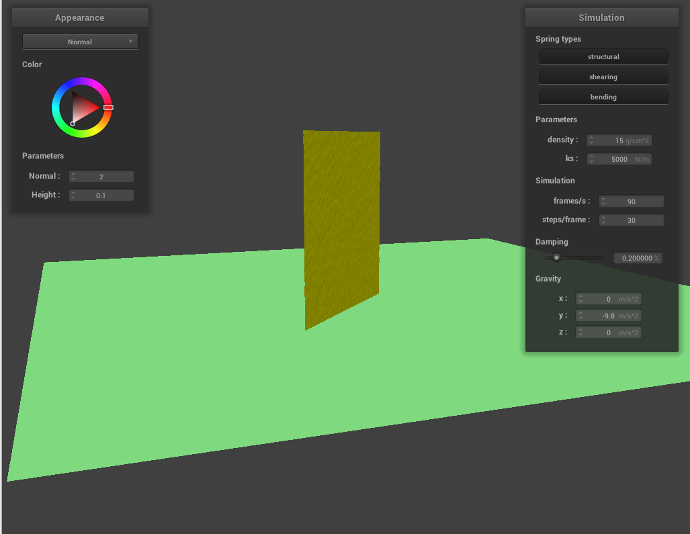
Test 7
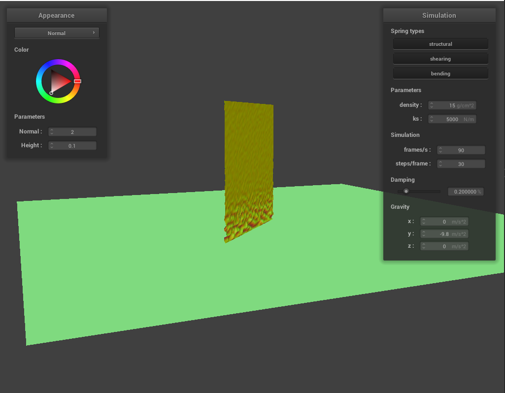
Illustration of Barycentric coordinates
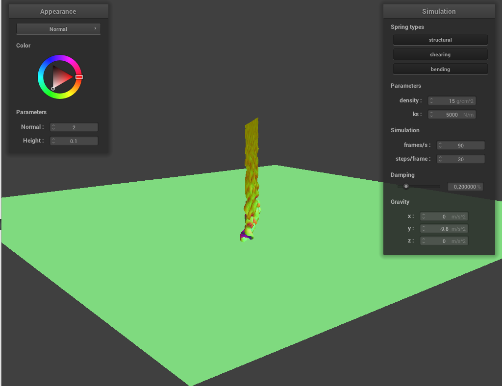
Test 7
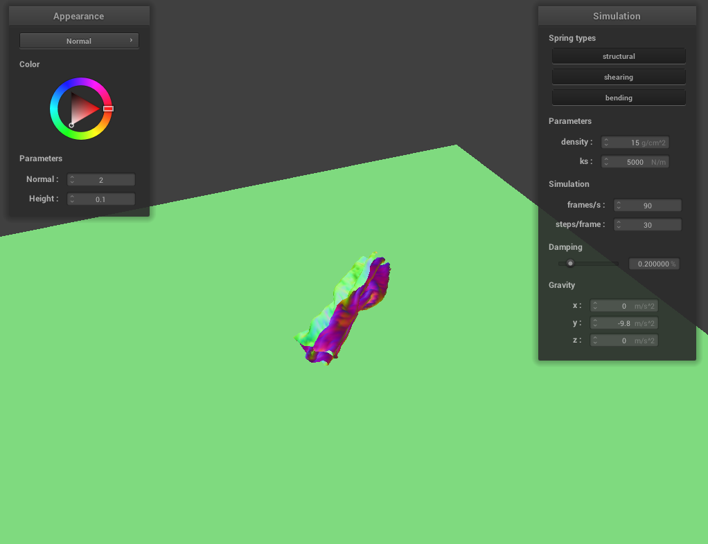
Illustration of Barycentric coordinates
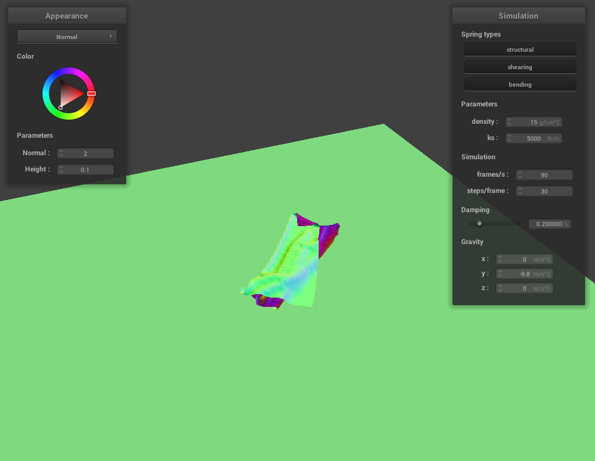
Test 7
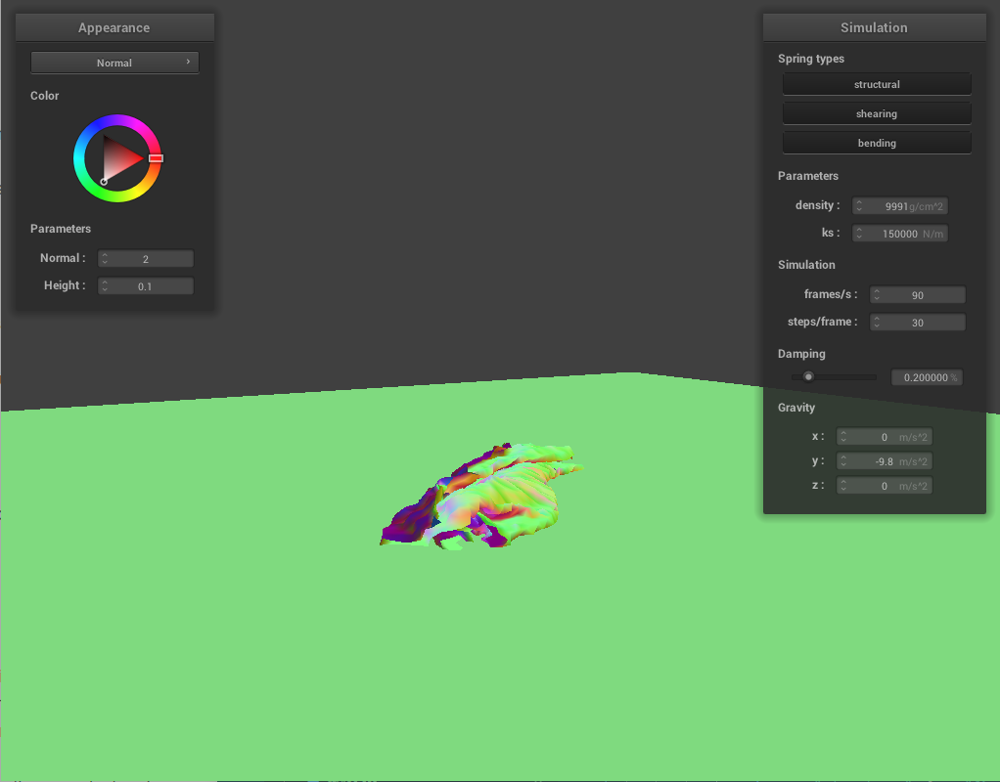
High density high kslow density low ks
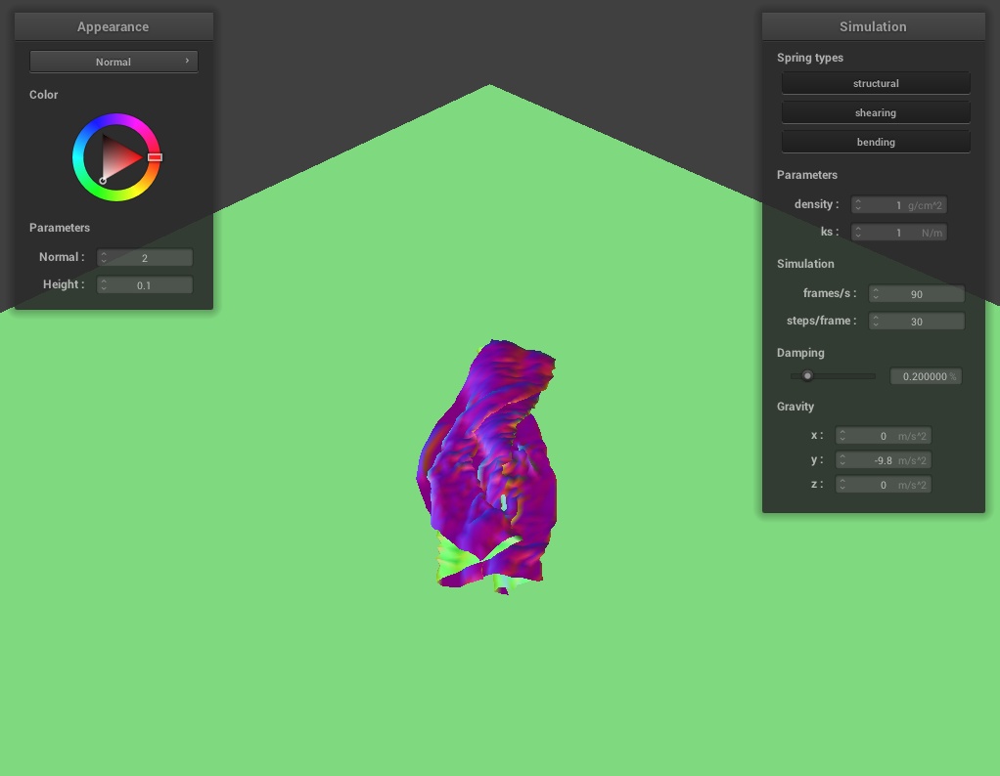
low density low ks
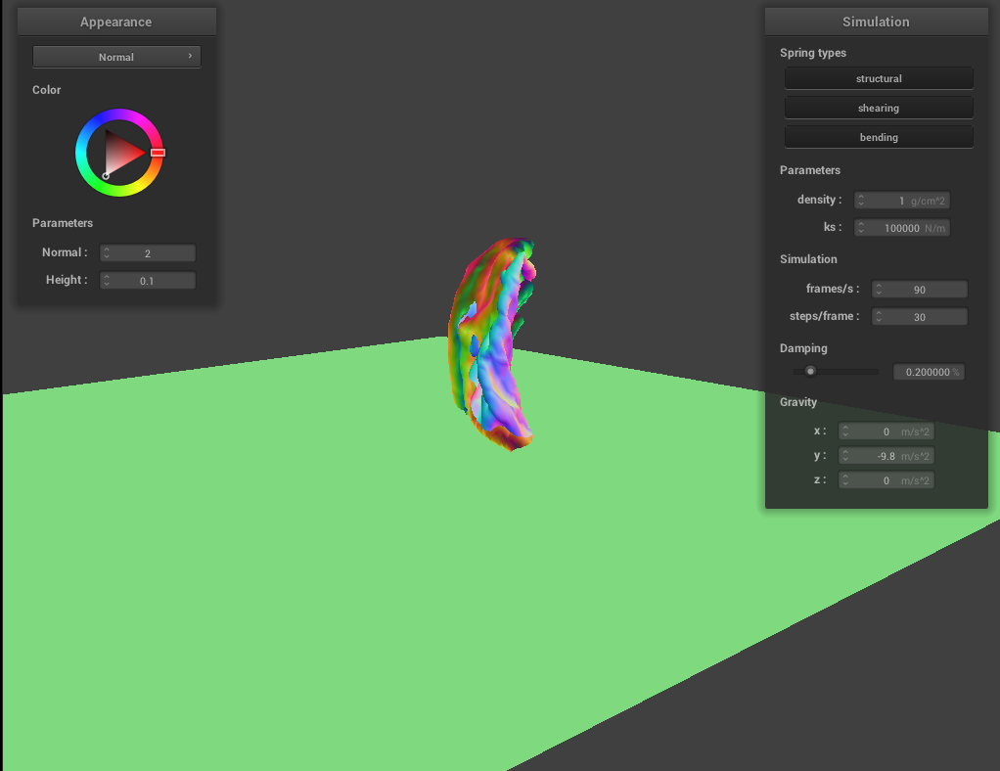
low density high ks
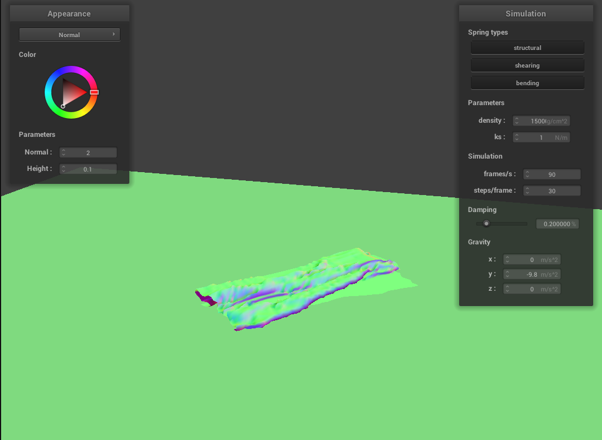
high density low ks
Part 5: Shaders
Shader programs are used to provide shading to 3D scenes and runs in parallel on GPU which accelerates our render of a scene.
Vertex shaders are the input into the fragment shaders. Vertex shader transforms vertices such as changing the position and normal vectors and then
setting gl_positions to the resulting vector. And the fragment shader sets the color between the vertices and write it to out_color.
Blinn-Phong shading model is used to display the reflection of shiny surfaces. It is the sum of the 3 types of reflection that is ambient, diffuse adn specular.
The ambient light is the uniform light that is scattered around the scene. The Diffuse light is like the reflection of the shadow of our objects and its surfaces. The specular is teh shininess reflection from the object.
For the bump mapping, we can only see small bumps on the surfaces of our sphere and plane. But for the displacement, we see actual bigger bumps and holes on our sphere and
plane.